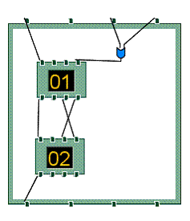
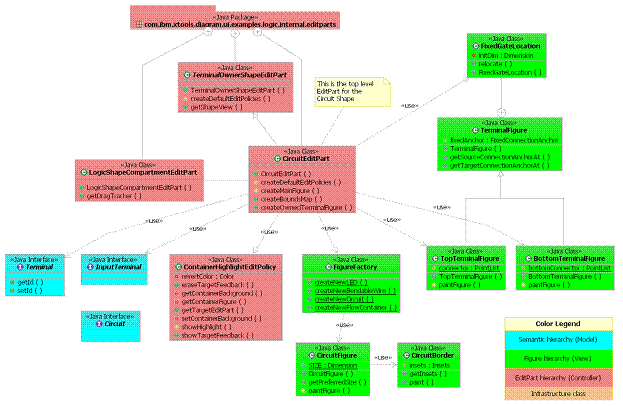

Tutorial: Supporting Containment of Shapes
|
Version: 0.1 |
Date: August 11, 2005 |
Contents
· Overview
· Introduction
· Supporting containment of shapes
· Show containment feedback inside the container
· Summary
Overview
This tutorial provides the reader with the steps to containment of shapes with-in other shapes on the diagram surface.
References
This tutorial references the following tutoral:
Create a shape
Introduction
In this tutorial, we will use the Logic Diagram Example to illustrate how to create a circuit shape that can contain other logic elements (i.e. LED, And Gate etc.). To gain familiarity with the Logic Diagram Example, refer to the Logic Example Guide.
Supporting
containment of shapes
[back
to top]
Having shapes contain other shapes is a common scenario that many
diagram editors need to handle. This
is seen in the logic example in the Circuit shape. The top level Circuit shape is added
to the palette and diagram surface in the same manner as the LED shape. The difference is in how the view
factory initializes the view on creation.
It is initializes with a sub view that allows for containment
with-in the top level view. To
demonstrate this we'll consider how the Circuit shape was added to the
Logic example.
Example: Circuit Shape displaying
containment

Add entry to the contribution for the palette provider for the Circuit shape
See #Add entries to the contribution for the palette provider.
Add new View provider entry for the Circuit shape
This mechanism is the same as the LED shape except that we will create a sub view inside the Circuit shape that will store the children views. It is necessary to encapsulate this within a sub view because we want to have the ability to collapse the sub view to hide the children.
See #Add new View provider entry
In the CircuitViewFactory class we create the notation view for the Circuit and additionally we will create a child that will be the container for views created by the user from the palette with-in the Circuit.
In CircuitViewFactory:
/**
* @see
org.eclipse.gmf.runtime.diagram.ui.internal.view.AbstractNodeView#decorateView(org.eclipse.gmf.runtime.diagram.ui.internal.view.IContainerView,
*
org.eclipse.core.runtime.IAdaptable, java.lang.String, int, boolean)
*/
protected void
decorateView(IContainerView containerView,
IAdaptable
semanticAdapter, String semanticHint, int index,
boolean persisted) {
super.decorateView(containerView,
semanticAdapter, semanticHint, index,
persisted);
getViewService().createNodeView(semanticAdapter,
this,
"LogicCompartment",
IView.APPEND); //$NON-NLS-1$
}
Add new EditPart provider entry for the Circuit shape
The controller for this container view is an EditPart called the 'ShapeCompartmentEditPart'. This EditPart is collapsible and simulates some of the behavior of the root diagram drawing surface. In the Logic example we override the default 'ShapeCompartmentEditPart' with a class called 'LogicShapeCompartmentEditPart'. This override is needed to improve the usability of the drag behavior. By default, the shape compartment allows marquee selection of children with-in its bounds. However, this makes it difficult to move the top level shape. We decided to override this behavior to allow for more intuitive drag behavior of the Circuit itself. To create the 'LogicShapeCompartmentEditPart' create the EditPart provider entry for it with the id 'LogicCompartment' in the LogicEditPartProvider class.
See #Add new EditPart provider entry
To let the circuit contain a subcontainer for the shapecompartment, set the layout manager as ConstrainedToolbarLayout when creating a circuit figure. Otherwise the circuit can not position the contained shape compartment correctly with-in it's bounds.
In CircuitEditPart:
/**
* Creates a new Circuit Figure and
returns it.
*
* @return Figure representing the
circuit.
*/
protected NodeFigure
createMainFigure() {
NodeFigure nf = FigureFactory.createNewCircuit();
ConstrainedToolbarLayout layout =
new ConstrainedToolbarLayout();
nf.setLayoutManager(layout);
return
nf;
}
Show containment feedback inside the
container
[back
to top]
Install a new edit policy 'ContainerHighlightEditPolicy' on CircuitEditPart to highlight circuits when selected. Make ContainerHighlightEditPolicy subclass from ContainerEditPolicy in org.eclipse.gmf.runtime.diagram.ui plug-in. Overwrite 'showTargetFeedback' function in AbstractEditPolicy class.
In
ContainerHighlightEditPolicy:
public void
showTargetFeedback(Request request){
if(request.getType().equals(RequestConstants.REQ_MOVE)
||
request.getType().equals(RequestConstants.REQ_ADD)
||
request.getType().equals(RequestConstants.REQ_CLONE)
||
request.getType().equals(RequestConstants.REQ_CONNECTION_START)
||
request.getType().equals(RequestConstants.REQ_CONNECTION_END)
||
request.getType().equals(RequestConstants.REQ_CREATE)
)
showHighlight();
}
Example: Circuit shape structure

Summary
In this tutorial, we did the following:
- Created container shape
- Learned how to display containment feedback when dragging inside container.